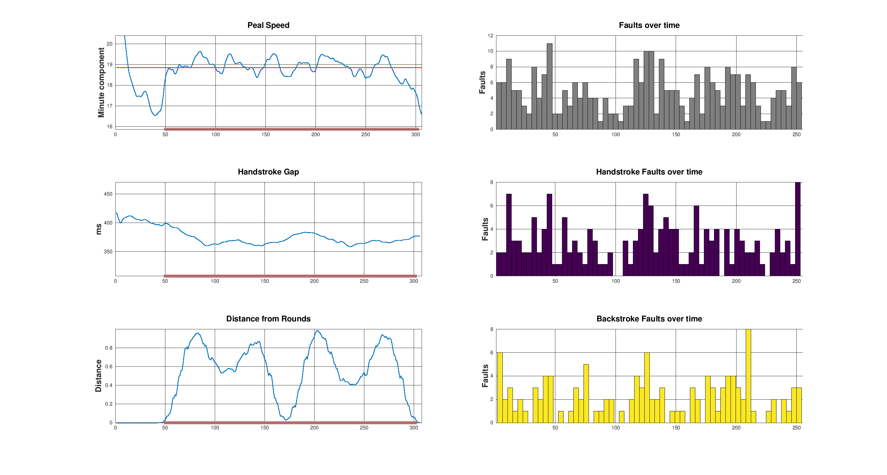

Ringer Home Ringer Home |
 Compass Compass |
 Error Histogram Error Histogram |
 Individual Bell Errors Individual Bell Errors |
 Judge Home Judge Home |
 Statistician Home Statistician Home |
 Files for Download Files for Download |
 Technical Information Technical Information |
 Index of Touches Index of Touches |
| Ringer Home |
Compass |
Error Histogram |
Individual Bell Errors |
Judge Home |
Statistician Home |
Files for Download |
Technical Information |
Index of Touches |
Shows how the band as a whole rang when ringing in a given position or following other bells. When ringing in a given position shows for example whether the band is weak at lead or whether they are habitually late at backstroke in last place. For following other bells, shows how the band as a whole is affected by bells other than the one each is ringing. Might indicate "fear of the bells", or perhaps that the band is distracted by a ringer's handling style.
Shows how each bell rang. There are eight tables covering all combinations of:
Perfect ringing would have zeros in all squares of the tables. Each square is the mean or standard deviation of multiple individual striking errors and where there are fewer than five occurrences the square is marked grey as the value may not be a statistically significant indicator of striking faults. Otherwise pink highlights negative values and orange positive values, and the darker the colour the worse the error.
If the touch contains rows with errors above the threshold the rows containing the errors are ignored for the purpose of these tables. This improves the likelihood that the dark coloured cells reflect striking faults even when there are method errors which would otherwise make the numbers meaningless. The row(s) of this touch that were ignored were: .
The overall experience of listening to and ringing of a touch is determined by what contest judges often refer to as its "compass", i.e. something related to how well the band rang that is distinct from a count of striking errors in individual blows. Compass has not been mathematically defined but it seems likely to be related to stability of the rhythm. The graphs here are an experimental effort to understand it better by showing how the basic elements of rhythm (speed and handstroke uplift) vary through a piece of ringing and may correlate with other factors such as distance from rounds and amount of random errors.
In open handstroke ringing the audible rhythm is a repeating cycle of (hopefully) even gaps and one bigger gap. This rhythm is created by all ringers leaving more time from backstroke to handstroke than from handstroke to backstroke. It is emphatically NOT created by the bell leading at hand leaving a handstroke gap over the last bell at backstroke and everyone else following (which is how it is sometimes explained), because that would require us to be ringing by ropesight. Leaving more time requires the handstroke to be lifted or held up on every stroke whether leading or not hence the term Handstroke Uplift. The handstroke gap is the audible consequence of handstroke uplift.
This is a graph indicating by a number between 0 and 1 indicating how the bells are distributed in the change. Zero occurs when the bells are in rounds and one when in backrounds. Around .5 occurs when the bells are most mixed up. It is included because it has been noticed that in a lot of 12-bell ringing handstroke uplift varies significantly through the ringing and the variation correlates with this measure. Given that, oddstruckness aside, big bells naturally swing with little uplift and due to the weight of the rope small bells naturally ring with large uplift an explanation may be that the bells at the front of the change tend to impose their natural uplift on the ringing, however there is no direct evidence to support this theory.
The inaccuracy in the timing of a blow is decided by how far (in time) it is from what the model expected. These inaccuracies are accumulated for all blows in the row using a statistical technique called Standard Deviation. As it's a measure of the error low numbers are better. When used on good ringing the Standard Deviation is in the range 30-40 milliseconds.
The numbers on the horizontal axes are row numbers and the touch is indicated by the thick line.
This graph shows the number of errors(*) of different sizes. The peak or "median" value represents the "everything going right" capability of the band.
The shape of the histogram should be roughly that of a bell with its mouth down but method or ropesight errors cause the curve to be lop-sided on the right. If this happens the reported Standard Deviation for the touch will be higher than the median and the difference between the two shows the disruptive effect of such errors.
When working on improving the overall standard of striking in the band, recording the median standard deviation of each touch is a good way of monitoring overall progress.
----------
(*) measured as the standard deviation from the ideal according to the Contest model
Association = ASSOCIATION
Calling = CALLING
CompositionName = COMPOSITIONNAME
Footnotes = FOOTNOTES
Ringers = RINGERS
QUALITY


 00:00 / 00:00
00:00 / 00:00


| Striking summary for the band |
|---|
| Striking summary for ringer of |
|---|
![[derivation]](iconderive.png) Contest Model: adjusts quickly to speed of ringing enabling and Handstroke Gap allowed to vary over the touch. Error scoring matches what is audible, for contests. HawkEar model: Adjusts slowly to speed of ringing and Handstroke gap of model is fixed. Errors per bell are good measure of individual ringer, for learning. RWP model: provided for historical reasons. Metronomic model. Shows difference between actual and perfect ringing
Contest Model: adjusts quickly to speed of ringing enabling and Handstroke Gap allowed to vary over the touch. Error scoring matches what is audible, for contests. HawkEar model: Adjusts slowly to speed of ringing and Handstroke gap of model is fixed. Errors per bell are good measure of individual ringer, for learning. RWP model: provided for historical reasons. Metronomic model. Shows difference between actual and perfect ringing
![[learn]](iconlearn.png) Bellringing judges normally count audible clips and gaps to score ringing, however computer models smooth out timing errors (in different ways according to the model) which gives an "ideal" time for each blow. The differences between the actual and ideal times are assumed to be errors, and the average error (mathematically the RMS error) is a measure of the quality of ringing. This method of defining errors has the advantage that it allows the error to be attributed to a specific bell, making it more useful than clips and gaps for learning and measuring progress.
Bellringing judges normally count audible clips and gaps to score ringing, however computer models smooth out timing errors (in different ways according to the model) which gives an "ideal" time for each blow. The differences between the actual and ideal times are assumed to be errors, and the average error (mathematically the RMS error) is a measure of the quality of ringing. This method of defining errors has the advantage that it allows the error to be attributed to a specific bell, making it more useful than clips and gaps for learning and measuring progress.
| All bells | Both | Hand | Back |
|---|
| Bell: (none) | Both | Hand | Back |
|---|
| Listening and Judging |
|---|
{kind=link}
{kind=link}
{kind=link}